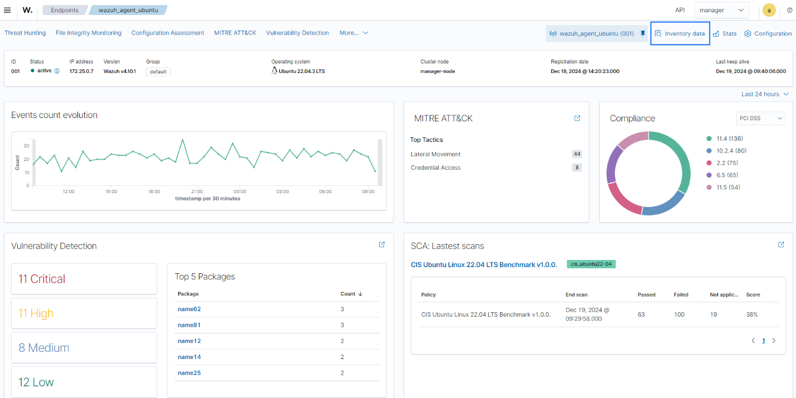

×

Security Operations Center (SOC)
Implementatie van een Security Operations Center architectuur met aanvalssimulatie, monitoring en geautomatiseerde incident response capabilities.

SOC Componenten & Architectuur:
- Aanvalssimulatie: Infection Monkey draaiend via een Kali Linux Attack VM (192.168.56.103)
- Endpoint & IDS: Ubuntu Endpoint (192.168.56.101) uitgerust met Wazuh Agent en Suricata
- SIEM & Dashboarding: Wazuh (Manager) met bijbehorend Wazuh Dashboard
- Automatisering (SOAR): n8n voor het koppelen van systemen en automatiseren van workflows
- Externe Integraties: VirusTotal (Threat Intelligence), Jira (Ticketing), Gmail & Slack (Notificaties) en Google Sheets (Logging)
Belangrijkste Features:
- Simulatie van realistische netwerkaanvallen om de verdediging te testen.
- Detectie van dreigingen op het endpoint via gecombineerde inzet van de Wazuh Agent en Suricata.
- Centrale verzameling en analyse van security events in het Wazuh platform.
- Geautomatiseerde afhandeling van alerts via n8n (bijv. automatische file-scans in VirusTotal).
- Directe alarmering en incident tracking via integraties met Slack, Gmail en Jira.